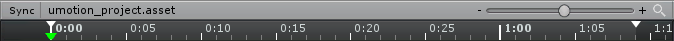

Dopesheet / Curves View
Time Ruler
Time Ruler
The Timer Ruler units are frames. Units are labeled in the following format second:frame for example 1:20 stands for 1 second and 20 frames. When the framerate is 30 frames per second as in the screenshot above a new second starts after 30 frames (0:29 ➔ 1:00).
Time Ruler Navigation
- The green arrow is the frame cursor. The animated GameObject always previews the animation pose of the current frame cursor position.
- By left clicking somewhere on the Timer Ruler the frame cursor is set to this position.
- By left clicking and dragging, the frame cursor can be dragged. The pose of the animated GameObject is updated accordingly. This can be used to preview the animation. When ESCAPE is pressed, dragging is aborted and the frame cursor is reverted to its original position.
- When the frame cursor is changed but the current pose has not applied modifications, a dialog window is asking if the modifications should be discarded or if they should be kept for the new frame.
- The white arrows indicate the preview playback start and end frame. By clicking the play button in the Playback Navigation the selected time span is played. This is just for preview and has no influence on the exported animation. If the playback end index is at the last frame of the animation, it will automatically stay at the end (when the last keys are moved or new keys are added etc.).
Sync Button
This button can be used to synchronize the Clip Editor with Unity's Timeline/Animation Window (see Unity Timeline Integration).
General Controls
The following controls apply to both, the Dopesheet and the Curves View.
Zoom and Panning
- By using the mouse wheel it is possible to zoom into the location where the mouse is currently pointing at. In Curves View, both axes are zoomed at the same time.
- The slider in the upper right corner of the Clip Editor can be used to zoom only the time axis.
- When holding CONTROL while operating the mouse wheel, only the time axis is zoomed (useful when in Curves View).
- When holding SHIFT while operating the mouse wheel, only the y-axis is zoomed (this only works when in Curves View). When the mouse cursor is hovering the y-axis ruler in the Curves View, only the y-axis is zoomed even when CONTROL is not being pressed.
- By click and dragging the end of the horizontal (or vertical when in Curves View) scroll bar, it is also possible to zoom in and out.
- By pressing ALT + Left Mouse Button or the mouse wheel the Dopesheet and Curves View can be dragged.
Selecting
- Left click selects a key or event and clears the previous selection.
- By left clicking and holding it is possible to make a rectangular selection.
- When CONTROL is held while clicking on a key or event, it is added or removed from the selection (according to whether it was already selected or not).
- When holding SHIFT while left clicking on a key or event, all keys or events in the same row starting with the closest and ending with the clicked will be selected.
Context Menu
When performing a context click in the Dopesheet or Curves View, a context menu is shown.
| Menu Item | Description |
|---|---|
| Add Keys To All Properties | This menu item only shows up when the mouse was clicked in the Master Keys or Animation Events section (see Dopesheet View). It creates new keys for all animated properties at the current hovered frame. If there are already any key frames for an animated property, it will create a key that fits into the current curve. If there isn't any key for an animated property, it will key the configured Reference Pose. |
| Add Keys | Adds new keys to all channels of the animated property and the frame the mouse is currently hovering. If there are already any key frames for the animated property, it will create keys for every channel that fit into the current curves. If there isn't any key for an animated property, it will key the configured Reference Pose. |
| Add Event | Adds a new animation event at the frame the mouse is currently hovering. |
| Delete | Deletes the clicked or selected keys/events. |
| Edit Key | Only available in Curves View if the curve isn't read only. Opens a small dialog window in the Curves View that can be used to edit the clicked or selected key(s) frame and value. |
| Cut | Copies the clicked or selected keys/events into the clipboard and deletes them. |
| Copy | Copies the clicked or selected keys/events into the clipboard. |
| Paste | Pastes the previously copied keys from the clipboard. Existing keys are overwritten, existing events are merged. |
| Insert | Inserts previously copied keys to the animation clip at the current selected frame. This will move existing keys. |
| Reverse | Inverts all selected keys along the time axis (so that they are played backwards). |
| Crop to Playback | Crops the current animation clip to the selected playback area (i.e. the area between the white arrows in the time ruler). This affects all animation layers of the animation clip. |
| Broken Tangents | Sets or resets the clicked or selected keys Broken Tangents mode. Broken Tangents means that the left and right tangents are independent of each other. When tangents are broken, they can only be set to Free, Linear or Constant. |
| Left or Right Tangent/Free | Sets the clicked or selected keys left or right tangent into Free mode. In this mode, the tangent can be freely adjusted using the tangent handle in the Curves View. |
| Left or Right Tangent/Linear | Sets the clicked or selected keys left or right tangent into Linear mode. In this mode, the tangent handle is not available in the Curves View. The tangents are always aligned in a straight line to the previous or following key. |
| Left or Right Tangent/Constant | Sets the clicked or selected keys left or right tangent into Constant mode. In this mode, the tangent handle is not available in the Curves View. The curve retains a constant value between two keys. The value of the left key determines the value of the curve segment. |
| Both Tangents/Weighted | Available in Unity 2018.1 and higher. Sets the clicked or selected keys left or right tangent into Weighted mode. The tangent handle's length can now be changed. The longer the handle the more weight (or influence) the tangent has on the resulting curve. |
| Both Tangents/Clamped Auto | Sets the clicked or selected keys left and right tangent into Clamped Auto mode. This is the default tangent mode. Broken tangents are automatically disabled. The tangents are automatically set to make the curve pass smoothly through the key. When editing the key’s frame or value, the tangents adjust to prevent the curve from “overshooting” the target value. The tangent handle is available in the Curves View, if it is used tangents are automatically set to Free. The tangents of the first and last key are calculated so that the movement smoothly accelerates/decelerates at the beginning/end. This is OK for animation clips that are played once but would cause a noticeable "seam" when the clip is played in a loop. Thus when looping is enalbed in the Playback Navigation the first and last key's tangents are calculated so that they blend seamlessly. The Playback Navigation settings only affect the animation preview inside UMotion. Use the loop setting in the Clip Settings to enable that behaviour for exported clips. |
| Both Tangents/Auto | Sets the clicked or selected keys left and right tangent into Auto mode. This mode is the legacy version of Clamped Auto. The tangents are also automatically set to make the curve pass smoothly through the key but "overshooting" is not prevented. The tangents of the first and last key are calculated so that the movement smoothly accelerates/decelerates at the beginning/end. This is OK for animation clips that are played once but would cause a noticeable "seam" when the clip is played in a loop. Thus when looping is enalbed in the Playback Navigation the first and last key's tangents are calculated so that they blend seamlessly. The Playback Navigation settings only affect the animation preview inside UMotion. Use the loop setting in the Clip Settings to enable that behaviour for exported clips. |
| Both Tangents/Free | Sets the clicked or selected keys left and right tangent into Free mode. In this mode, the tangent can be freely adjusted using the tangent handle in the Curves View. |
| Both Tangents/Free Flat | Sets the clicked or selected keys left and right tangent into Free Flat mode. This mode is a special case of the Free mode, where both tangents are flat. The tangent handle is available in the Curves View. If it is used and tangents aren't flat anymore, tangents are automatically set to Free. This mode is enabled automatically, when the tangent mode was Free and the tangents have been manually edited to be flat. |
| Both Tangents/Linear | Sets the clicked or selected keys left and right tangent into Linear mode. This will automatically enable the broken tangents mode. The tangent handle is not available in the Curves View. The tangents are always aligned in a straight line to the previous or following key. |
| Both Tangents/Constant | Sets the clicked or selected keys left and right tangent into Constant mode. This will automatically enable the Broken Tangents mode. The tangent handle is not available in the Curves View. The curve retains a constant value between two keys. The value of the left key determines the value of the curve segment. |
| Both Tangents/Weighted | Available in Unity 2018.1 and higher. Sets the clicked or selected keys left and right tangent into Weighted mode. The tangent handle's length can now be changed. The longer the handle the more weight (or influence) the tangent has on the resulting curve. |
| Select and Set Frame Cursor | Selects the clicked key and moves the frame cursor to the key's position. Very useful for tweaking/polishing animations (especially when using this function's shortcut ALT + Left Mouse Button). |